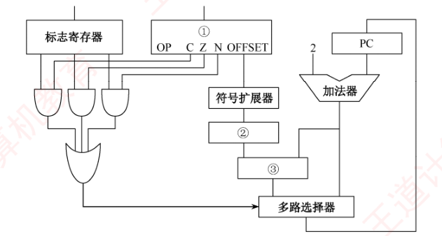
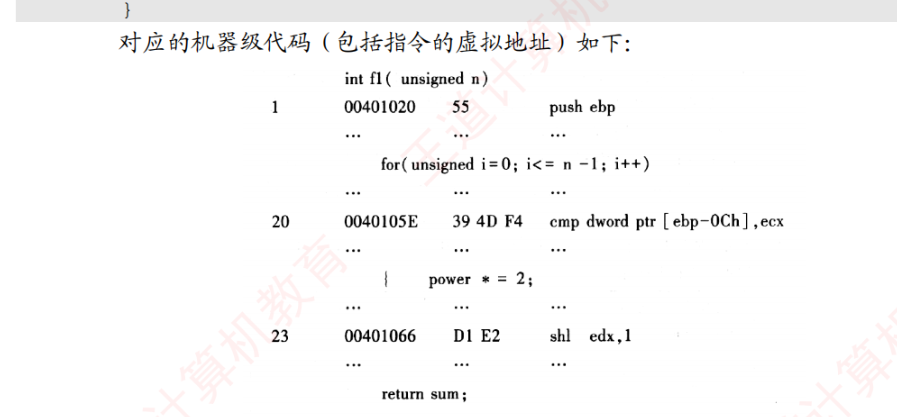
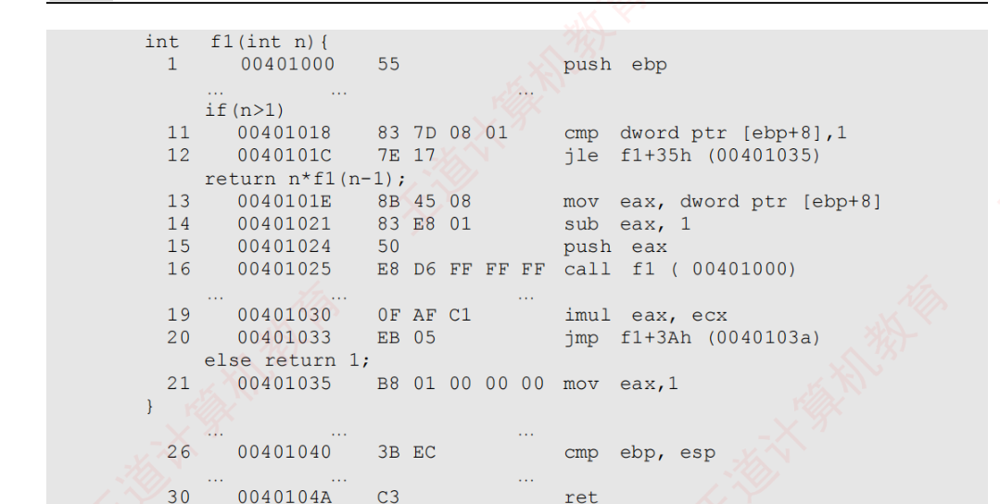
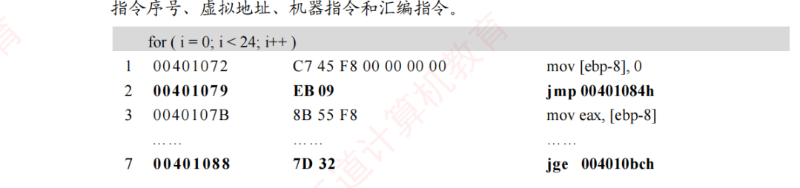
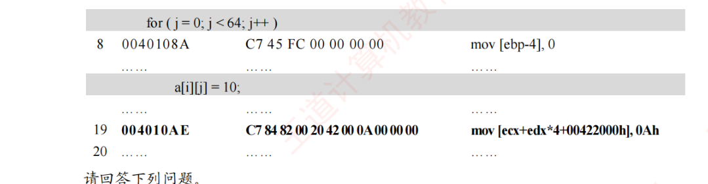
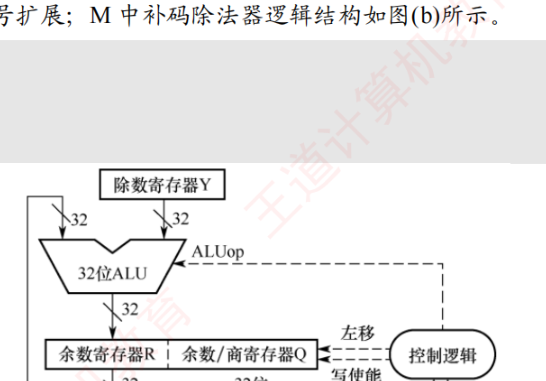
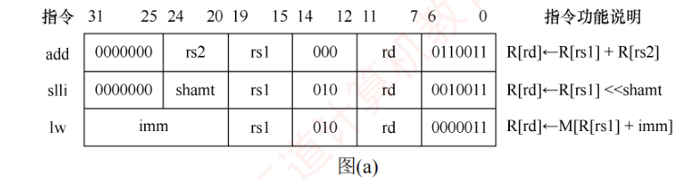
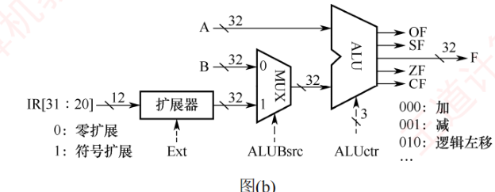

第4章 习题精选
本页共 34 题：选择题 24 道（第 1～6 题出自 4.1 指令系统，第 7～15 题出自 4.2 指令的寻址方式，第 16～21 题出自 4.3 程序的机器级代码表示，第 22～24 题出自 4.4 CISC 和 RISC 的基本概念），综合题 10 道（第 25～34 题，覆盖扩展操作码设计、寻址方式 EA 计算、条件转移与数据通路、机器级代码分析、RISC 指令格式与数据通路控制信号、除法部件六类主线）。题干【 】内为做题本出处；收录 2009/2010/2011/2013/2014/2017/2019/2022/2023/2024/2025 年统考真题共 16 道；选择题答案均已与《选择题【答案速查】》网格逐题核对。
一、选择题（第1～24题）
第1题【4.1·P153】下列关于指令及体系结构和指令系统的说法中，错误的是（ ）
答案与解析
答案：D
D 错误：指令系统就是一台机器所能执行的机器语言指令的集合，指令系统与机器语言是同一层面的概念，绝非“无关”。A 正确，ISA 处于软件与硬件的交界面上，是二者沟通的桥梁；B 正确，ISA 指低级语言程序员看到的概念结构和功能特性；C 正确，硬件只能直接执行机器语言程序，任何程序运行前都须先翻译成机器语言程序。
第2题【4.1·P154】以下叙述错误的是（ ）
答案与解析
答案：B
B 错误：“单地址指令”只说明地址码字段给出一个显式地址，与指令总长度是否固定没有必然联系——采用扩展操作码时单地址指令与二地址指令可以不等长。A 正确，指令长度取存储字长的整数倍便于一次整字取出；C 正确，单字长指令一次访存即可取出整条指令，取指更快；D 正确，单地址指令的另一个操作数可隐含约定在 ACC 等寄存器中（如“ACC ← ACC ⊕ M(A)”），故可能只有一个显式操作数，也可能配一个立即数/隐含数而有两个操作数。
第3题【4.1·P154】一个计算机系统采用 32 位单字长指令，地址码为 12 位，若定义了 250 条二地址指令，则还可以有（ ）条单地址指令。
答案与解析
答案：D
① 二地址指令：两个地址码占 12×2 = 24 位，操作码 8 位，共 \(2^8 = 256\) 个码点；已用 250 条，剩余 \(256 - 250 = 6\) 个码点作为扩展前缀（8 位前缀 + 12 位自由编码）。
② 单地址指令：操作码 = 8 + 12 = 20 位，可扩展出 \(6\times2^{12} = 24576 = 3\times2^{13}\) 条。
故选 D。
第4题【4.1·P154】某机器的指令字长为 12 位，采用扩展操作码技术，支持零地址、一地址和二地址 3 种指令格式，地址码长度均为 4 位。若一地址和二地址指令均取最大可能条数，则该机器最多可定义的指令总数为（ ）
答案与解析
答案：B
关键：短码不得为长码前缀，必须逐级留出扩展前缀。
① 二地址指令操作码 4 位，共 16 个码点，为留出一地址扩展前缀，最多取 15 条（1111 留作扩展）；
② 一地址指令操作码 8 位 = 扩展前缀 1111 + 4 位编码，共 16 个码点，又须为零地址留前缀，最多取 15 条（11111111 留作扩展）；
③ 零地址指令操作码 12 位 = 11111111 + 4 位编码，共 16 条。
总数 = 15 + 15 + 16 = 46 条，选 B。（若把 16 个码点全用尽，则后级格式无处扩展。）
第5题【4.1·P154·2017 统考真题】某计算机按字节编址，指令字长固定且只有两种指令格式，其中三地址指令 29 条、二地址指令 107 条，每个地址字段为 6 位，则指令字长至少应该是（ ）
答案与解析
答案：A
① 设操作码为 5 位：\(2^5 = 32\) 个码点，三地址指令用去 29 条，剩 \(32-29 = 3\) 个扩展前缀；
② 二地址指令操作码 = 5 + 6 = 11 位，可编码 \(3\times2^6 = 192\) 条 ≥ 107 条，够用；
③ 指令字长由最长的三地址格式决定：操作码 5 位 + 三个地址字段 6×3 = 18 位 → 5 + 18 = 23 位；
④ 因按字节编址，指令字长须为 8 的整数倍：23 位向上取整为 24 位，选 A。（若取 4 位操作码，则码点 \(2^4=16\) 个装不下 29 条三地址指令。）
第6题【4.1·P154·2022 统考真题】设计某指令系统时，假设采用 16 位定长指令字格式，操作码使用扩展编码方式，地址码为 6 位，包含零地址、一地址和二地址 3 种格式的指令。若二地址指令有 12 条，一地址指令有 254 条，则零地址指令的条数最多为（ ）
答案与解析
答案：D
① 二地址指令操作码 4 位（16 − 6×2 = 4），\(2^4 = 16\) 个码点用去 12 个，剩 \(16-12 = 4\) 个扩展前缀；
② 一地址指令操作码 10 位（4 + 6），扩展空间 \(4\times2^6 = 256\) 个码点，用去 254 个，剩 \(256-254 = 2\) 个扩展前缀；
③ 零地址指令操作码 16 位，可扩展 \(2\times2^6 = 128\) 条。
故最多 128 条，选 D。
第7题【4.2·P166】在指令寻址的各种方式中，获取操作数最快的方式是（ ）
答案与解析
答案：B
立即寻址的操作数直接写在指令中，随取指令一并取出，执行时既不访存也不必再读寄存器，速度最快。寄存器寻址还需访问一次寄存器堆；直接寻址要访存一次；间接寻址至少访存两次，最慢。
第8题【4.2·P166】设指令中的地址码为 A，变址寄存器为 X，程序计数器为 PC，则变址间址寻址方式的操作数的有效地址 EA 是（ ）
答案与解析
答案：B
变址间址 = 先变址、后间址：第一步先变址，得中间地址 \((X) + A\)；第二步再间址一次，从该单元中取出操作数的有效地址。故 \(EA = ((X)+A)\)，选 B。D 是纯变址（不间址）；A 是相对间址的写法；C 的两层括号位置错误（把 (A) 也当寄存器内容取了一次）。
第9题【4.2·P167】相对寻址方式中，指令所提供的相对地址实质上是一种（ ）
答案与解析
答案：D
相对寻址 \(EA = (PC) + A\)，而取指结束后 PC 已自动加增并指向下一条指令的地址，因此位移量 A 实质是相对“下条指令首地址”的偏移量，选 D。正因为基准是下条指令而非本条指令，做题时务必先加上指令长度再算目标地址（见第 11 题）。
第10题【4.2·P167】寄存器 R1、R2 均为 16 位，指令 MOV R1, [R2] 的功能是把内存数据传送至寄存器 R1，寻址方式为寄存器间接寻址。R2 的值为 1234H，内存单元 1234H 存放数据 56H，内存单元 1235H 存放数据 78H，采用小端方式存储。则执行指令后 R1 的值为（ ）
答案与解析
答案：B
寄存器间接寻址：从地址 (R2) = 1234H 处取一个 16 位的字，即 1234H、1235H 两个字节。小端方式下低字节存于低地址：低字节 = M[1234H] = 56H，高字节 = M[1235H] = 78H，拼出 16 位数 = 7856H。故 R1 = 7856H，选 B。（“低地址的字节是低位”不要反。）
第11题【4.2·P168·2009 统考真题】某机器字长为 16 位，主存按字节编址，转移指令采用相对寻址，由 2 字节组成，第一字节为操作码字段，第二字节为相对位移量字段。假定取指令时，每取一个字节 PC 自动加 1。若某转移指令所在主存地址为 2000H，相对位移量字段的内容为 06H，则该转移指令成功转移后的目标地址是（ ）
答案与解析
答案：C
取指阶段：指令占 2 字节，每取 1 字节 PC 加 1，取指结束后 PC = 2000H + 2 = 2002H（已指向下一条指令）。
执行阶段：目标地址 = (PC) + 位移量 = 2002H + 06H = 2008H，选 C。（A 直接用指令地址加位移量、B 只加了 1，都漏了“PC 先指向下条指令”这一步。）
第12题【4.2·P168】某计算机字长为 16 位，标志寄存器中存在 ZF、SF、OF 和 CF 标志位，采用双字节字长指令字。假定 bgt（大于零转移）指令的第一个字节指明操作码和寻址方式，第二个字节为立即数 Imm8，用补码表示。指令功能是：若跳转条件成立，则 PC = PC + 2 + Imm8×2；否则，PC = PC + 2。则下列叙述中错误的是（ ）
答案与解析
答案：C
C 错误：有符号数“大于”要求不相等且不溢出反向，即 ZF = 0 且 SF⊕OF = 0。仅凭 SF⊕OF = 0 会把“相等”（ZF=1、SF=OF=0）也包含进去，变成“大于或等于”，与 bgt（大于转移）不符。A 正确：PC 每次加 2（双字节指令、逐字节推进），说明按字节编址；B 正确：无符号大于 ⇔ 没有借位（CF=0）且不相等（ZF=0），即 ZF+CF=0；D 正确：Imm8 补码范围 −128～+127，目标 = 本指令地址 +2+2×Imm8，相对 bgt 指令本身为前 127 条到后 128 条之间。
第13题【4.2·P168·2011 统考真题】偏移寻址通过将某个寄存器的内容与一个形式地址相加来生成有效地址。下列寻址方式中，不属于偏移寻址方式的是（ ）
答案与解析
答案：A
偏移寻址的共同公式是 \(EA = (\text{某寄存器}) + A\)：相对寻址的寄存器是 PC，基址寻址是基址寄存器，变址寻址是变址寄存器，三者同属偏移寻址家族。间接寻址是先访存取出有效地址（EA = (A)），没有“寄存器 + 形式地址”的结构，不属于偏移寻址，选 A。
第14题【4.2·P169·2013 统考真题】假设变址寄存器 R 的内容为 1000H，指令中的形式地址为 2000H；地址 1000H 中的内容为 2000H，地址 2000H 中的内容为 3000H，地址 3000H 中的内容为 4000H，则变址寻址方式下访问到的操作数是（ ）
答案与解析
答案：D
变址寻址：\(EA = (R) + A = 1000\text{H} + 2000\text{H} = 3000\text{H}\)。
操作数 = M[EA] = M[3000H] = 4000H，选 D。（若误做一次间址才会到 2000H/3000H 一层，注意变址只做“寄存器 + 形式地址”这一次加法，不间址。）
第15题【4.2·P169·2014 统考真题】某计算机有 16 个通用寄存器，采用 32 位定长指令字，操作码字段（含寻址方式位）为 8 位，Store 指令的源操作数和目的操作数分别采用寄存器直接寻址和基址寻址方式。若基址寄存器可使用任一通用寄存器，且偏移量用补码表示，则 Store 指令中偏移量的取值范围是（ ）
答案与解析
答案：A
① 16 个通用寄存器 → 寄存器编号 4 位；
② Store 指令各字段：操作码（含寻址方式位）8 位 + 源操作数寄存器编号 4 位 + 基址寄存器编号 4 位 + 偏移量，故偏移量位数 = 32 − 8 − 4 − 4 = 16 位；
③ 16 位补码表示范围：\(-2^{15} \sim 2^{15}-1\)，即 −32768 ～ +32767，选 A。
第16题【4.3·P187】假设 R[ax] = FFE8H，R[bx] = 7FE6H，执行指令 “add ax, bx” 后，寄存器的内容和各标志的变化为（ ）
答案与解析
答案：C
add ax, bx：目的操作数 ax，故结果写入 R[ax]（B、D 排除）。
① \( \text{FFE8H} + \text{7FE6H} = \text{17FCEH} \)，最高位进位被丢弃，ax = 7FCEH，CF = 1；
② 按带符号解释：FFE8H = −24，7FE6H = +32742，和 = 32718，在 16 位带符号范围 [−32768, +32767] 内，无溢出 → OF = 0；
③ 结果 7FCEH 最高位为 0 → SF = 0；结果非 0 → ZF = 0。选 C。
第17题【4.3·P187】某计算机的数据采用小端方式存储，减法指令 “sub ax, imm” 的功能为 (ax) − imm → ax，imm 表示立即数，该指令对应的十六进制机器码为 2dxxxx（从左到右以字节为单位由低地址到高地址），其中 xxxx 对应 imm 的机器码。若 imm = −3，(ax) = 7，则该指令对应的机器码和执行后 OF 标志位的值分别为（ ）
答案与解析
答案：C
① imm = −3 的 16 位补码为 FFFDH；小端方式下低字节存低地址，机器码字节顺序为 FD（低地址）、FF（高地址），跟在操作码 2D 后 → 机器码 = 2D FD FF，即 2DFDFFH；
② (ax) − imm = 7 − (−3) = 10，结果为正且在 16 位带符号范围内，无溢出 → OF = 0。选 C。
第18题【4.3·P187】某 C 语言程序中对数组变量 b 的声明为 “int b[10][5];”，有一条 for 语句如下：
for(i=0; i<10; i++)
for(j=0; j<5; j++)
sum += b[i][j];
假设执行到 “sum += b[i][j];” 时，sum 的值在 eax 中，b[i][0] 所在地址在 edx 中，j 在 esi 中，则 “sum += b[i][j];” 所对应的指令（Intel 格式）可以是（ ）
答案与解析
答案：A
b 为 int 型二维数组（每元素 4B），按行优先存放，b[i][j] 的地址 = b[i][0] 的地址 + j×4。已知 b[i][0] 在 edx、j 在 esi，故 \(EA = (edx) + (esi)\times4\)，写作 [edx+esi*4]，选 A。C 的比例因子 2 是 short 型数组的用法；B、D 把比例因子安到了错误的寄存器上。
第19题【4.3·P187】程序 P 中有两个变量 i 和 j，被分别分配在寄存器 eax 和 edx 中，P 中语句 “if(i<j) {...}” 对应的指令序列如下（左边为指令地址，中间为机器代码，右边为汇编指令），其中 jle 指令的偏移量为 0d：
804846a 39 c2 cmp dword ptr edx, eax 804846c 7e 0d jle xxxxxxxx
若执行到 804846aH 处的 cmp 指令时，i = 105，j = 100，则 jle 指令执行后将会转到（ ）处的指令执行。
答案与解析
答案：D
① cmp edx, eax 隐含计算 edx − eax = j − i = 100 − 105 = −5 < 0，满足“小于等于” → jle 条件成立，发生转移；
② 相对转移的基准是下一条指令的地址：jle 位于 804846cH、占 2 字节，下条指令地址 = 804846eH；
③ 目标地址 = 804846eH + 0dH = 804847bH，选 D。（A 是用 jle 自身地址 804846eH − 0dH 的反向错算；B 是不跳转时才会执行的地址。）
第20题【4.3·P188】子程序调用指令执行时，必须完成的操作是（ ）
答案与解析
答案：B
call 指令必须做两件事：保存返回地址（call 的下一条指令地址，通常压入栈中，即存入主存）＋ 把子程序入口地址送 PC。A 缺少保存返回地址，子程序无法正确返回；C 错在把 PC 存入通用寄存器——嵌套/递归调用会覆盖寄存器导致返回地址丢失；D 是实现手段而非必须完成的操作语义。选 B。
第21题【4.3·P188】假设 P 为调用过程，Q 为被调用过程，程序在 32 位 x86 处理器上执行，以下是 C 语言程序中过程调用所涉及的操作：
① 过程 Q 保存 P 的现场，并为非静态局部变量分配空间
② 过程 P 将实参存放到 Q 能访问到的地方
③ 过程 P 将返回地址存放到特定处，并转跳到 Q 执行
④ 过程 Q 取出返回地址，并转跳回到过程 P 执行
⑤ 过程 Q 恢复 P 的现场，并释放局部变量所占空间
⑥ 执行过程 Q 的函数体
过程调用的正确执行步骤是（ ）
答案与解析
答案：C
按“P 准备 → Q 执行 → Q 返回”的时序：② P 传实参 → ③ P 保存返回地址并跳到 Q → ① Q 保存 P 的现场、为局部变量分配栈空间 → ⑥ 执行 Q 的函数体 → ⑤ Q 恢复现场、释放局部变量空间 → ④ Q 取出返回地址跳回 P。正确顺序为 ②③①⑥⑤④，选 C。（A 把④提前到函数体之前、顺序错乱；D 把“恢复现场”提前到执行函数体之前。）
第22题【4.4·P193】下列描述中，不符合 RISC 指令系统特点的是（ ）
答案与解析
答案：B
B 不符合：RISC 寻址方式确实尽量少，但“指令功能尽可能强”是 CISC 的追求——RISC 恰恰只保留简单指令，复杂功能由多条简单指令组合完成。A、C、D 均为 RISC 的标准特征：定长指令、指令种类少；设置大量通用寄存器、只有 LOAD/STORE 访存；精选高频简单指令。
第23题【4.4·P193·2009 统考真题】下列关于 RISC 的说法中，错误的是（ ）
答案与解析
答案：A
A 错误：RISC 指令定长、格式少、多数单周期完成，控制器用硬布线（组合逻辑）实现速度最快；微程序控制是 CISC 应对复杂指令的手段。B、C、D 都是 RISC 的基本特征，说法正确。
第24题【4.4·P193·2025 统考真题】下列关于 RISC 的叙述中，错误的是（ ）
答案与解析
答案：C
C 错误：RISC 指令定长、寻址方式少、多数指令单周期完成，这些特征使它非常适合（而非难以）采用流水线数据通路实现，流水线正是 RISC 设计的出发点之一。A 正确（硬布线控制器）；B 正确（只有 LOAD/STORE 访存）；D 正确（寄存器多，过程调用参数尽量经寄存器传递以减少访存）。
二、综合题（第25～34题）
第25题【4.1·P155】在一个 36 位长的指令系统中，设计一个扩展操作码，使之能表示下列指令：
(1) 7 条具有两个 15 位地址和一个 3 位地址的指令；
(2) 500 条具有一个 15 位地址和一个 3 位地址的指令；
(3) 50 条无地址指令。
答案与解析
设计原则：短操作码不得成为长操作码的前缀，逐级留出扩展前缀。
-
三地址指令占用 15 + 15 + 3 = 33 位地址，操作码 = 36 − 33 = 3 位，共 \(2^3 = 8\) 个码点。取 000～110 共 7 个编码给 7 条三地址指令；111 不作为任何三地址指令的编码，留作扩展前缀。7 ≤ 8 − 1，可行。
-
二地址指令占用 15 + 3 = 18 位地址，操作码 = 36 − 18 = 18 位。这 18 位必须以扩展前缀 111 开头，后 15 位自由编码，扩展空间 = \(2^{15} = 32768\) 个码点 ≥ 500。取前 500 个编码（即 111 000000000000000 ～ 111 000000111110011），剩余 32768 − 500 = 32268 个码点留作零地址指令扩展。
-
零地址指令的 36 位全部是操作码：在 (2) 剩下的 32268 个扩展码点中任取 50 个（后 18 位任意取值即可）。50 ≤ 32268，可行。
结论：该设计能同时容纳 7 条三地址 + 500 条二地址 + 50 条零地址指令，且各级操作码互不前缀冲突。
第26题【4.2·P170】某机的机器字长为 16 位，主存按字编址，指令格式如下：
| 位 15～10 | 位 9～8 | 位 7～0 |
|---|---|---|
| 操作码（6 位） | X 寻址特征位（2 位） | D 位移量（8 位） |
其中，D 为位移量，X 为寻址特征位。X = 00：直接寻址；X = 01：用变址寄存器 X1 进行变址；X = 10：用变址寄存器 X2 进行变址；X = 11：相对寻址。设 (PC) = 1234H，(X1) = 0037H，(X2) = 1122H（H 代表十六进制数），请确定下列指令的有效地址：① 4420H ② 2244H ③ 1322H ④ 3521H ⑤ 6723H
答案与解析
先把每条指令写成二进制，切出 6-2-8 三个字段，按 X 的取值代入相应 EA 公式（主存按字编址，位移量 D 直接以字为单位相加）：
| 指令 | 二进制（OP / X / D） | X | EA 公式与代入 | EA |
|---|---|---|---|---|
| ① 4420H | 010001 / 00 / 00100000 | 00 | 直接寻址：EA = D = 20H | 0020H |
| ② 2244H | 001000 / 10 / 01000100 | 10 | X2 变址：EA = (X2)+D = 1122H+44H | 1166H |
| ③ 1322H | 000100 / 11 / 00100010 | 11 | 相对寻址：EA = (PC)+D = 1234H+22H | 1256H |
| ④ 3521H | 001101 / 01 / 00100001 | 01 | X1 变址：EA = (X1)+D = 0037H+21H | 0058H |
| ⑤ 6723H | 011001 / 11 / 00100011 | 11 | 相对寻址：EA = (PC)+D = 1234H+23H | 1257H |
第27题【4.2·P170·2010 统考真题】某计算机字长为 16 位，主存地址空间大小为 128KB，按字编址，采用单字长指令格式，指令各字段定义如下：
| 位 15～12 | 位 11～9 | 位 8～6 | 位 5～3 | 位 2～0 |
|---|---|---|---|---|
| OP | Ms | Rs | Md | Rd |
| 操作码 | 源操作数（寻址方式 / 寄存器） | 目的操作数（寻址方式 / 寄存器） | ||
转移指令采用相对寻址方式，相对偏移量用补码表示，寻址方式定义见下表。
| Ms/Md | 寻址方式 | 助记符 | 含义 |
|---|---|---|---|
| 000B | 寄存器直接 | Rn | 操作数 = (Rn) |
| 001B | 寄存器间接 | (Rn) | 操作数 = ((Rn)) |
| 010B | 寄存器间接、自增 | (Rn)+ | 操作数 = ((Rn))，(Rn) + 1 → Rn |
| 011B | 相对 | D(Rn) | 转移目标地址 = (PC) + (Rn) |
注：(X) 表示存储器地址 X 或寄存器 X 的内容。回答下列问题：
- 该指令系统最多可有多少条指令？该计算机最多有多少个通用寄存器？存储器地址寄存器 (MAR) 和存储器数据寄存器 (MDR) 至少各需要多少位？
- 转移指令的目标地址范围是多少？
- 若操作码 0010B 表示加法操作（助记符为 add），寄存器 R4 和 R5 的编号分别为 100B 和 101B，R4 的内容为 1234H，R5 的内容为 5678H，地址 1234H 中的内容为 5678H，5678H 中的内容为 1234H，则汇编语句 “add (R4), (R5)+”（逗号前为源操作数，逗号后为目的操作数）对应的机器码是什么（用十六进制表示）？该指令执行后，哪些寄存器和存储单元的内容会改变？改变后的内容是什么？
答案与解析
-
① 操作码 4 位 → 指令最多 \(2^4 = 16\) 条；② 寄存器编号字段 Rs/Rd 各 3 位 → 通用寄存器最多 \(2^3 = 8\) 个；③ 主存 128KB 按字编址、存储字长 16 位 = 2B，共 128KB ÷ 2B = 64K = \(2^{16}\) 个字单元 → MAR 至少 16 位；MDR 与存储字长相同 → 至少 16 位。
-
相对寻址的转移目标地址 = (PC) + (Rn)。Rn 是 16 位寄存器，内容可取 0000H ～ FFFFH，故转移目标地址范围为 0000H ～ FFFFH，可转向主存的任意单元。
-
① 拼机器码：OP = 0010B（add）；源操作数 (R4)：寄存器间接 → Ms = 001B，Rs = 100B（R4）；目的操作数 (R5)+：寄存器间接自增 → Md = 010B，Rd = 101B（R5）。
机器码 = 0010 001 100 010 101B = 2315H。② 执行过程：源操作数 = ((R4)) = M[1234H] = 5678H；目的地址 = (R5) = 5678H；执行 M[5678H] ← M[5678H] + M[1234H] = 1234H + 5678H = 68ACH；随后按 (Rn)+ 定义 R5 自增 1：R5 = 5678H + 1 = 5679H。
③ 改变的对象：寄存器 R5 → 5679H；存储单元 5678H 的内容 1234H → 68ACH。其余寄存器和存储单元（含 1234H 单元）均不变。
第28题【4.2·P170·2013 统考真题】某计算机采用 16 位定长指令字格式，其 CPU 中有一个标志寄存器，其中包含进位/借位标志 CF、零标志 ZF 和符号标志 NF。假定为该机设计了条件转移指令，其格式如下：
| 位 15～11 | 位 10 | 位 9 | 位 8 | 位 7～0 |
|---|---|---|---|---|
| 00000（OP） | C | Z | N | OFFSET |
其中，00000 为操作码 OP；C、Z 和 N 分别为 CF、ZF 和 NF 的对应检测位，某检测位为 1 时则表示需检测对应标志，需检测的标志位中只要有一个为 1 就转移，否则不转移。例如，若 C=1，Z=0，N=1，则需检测 CF 和 NF 的值，当 CF=1 或 NF=1 时发生转移；OFFSET 是相对偏移量，用补码表示。转移执行时，转移目标地址为 (PC)+2+2×OFFSET；顺序执行时，下一条指令地址为 (PC)+2。请回答下列问题：
- 该计算机存储器是按字节编址还是按字编址？该条件转移指令向后（反向）最多可跳转多少条指令？
- 某条件转移指令的地址为 200CH，指令内容为 OP=00000、C=0、Z=1、N=1、OFFSET=11100011B。若该指令执行时 CF=0，ZF=0，NF=1，则该指令执行后 PC 的值是多少？若该指令执行时 CF=1，ZF=0，NF=0，则该指令执行后 PC 的值又是多少？请给出计算过程。
- 实现“无符号数比较小于或等于时转移”功能的指令中，C、Z 和 N 应各是什么？
- 以下是该指令对应的数据通路示意图，要求给出图中部件 ①～③ 的名称或功能说明。

答案与解析
-
顺序执行时 PC 自动 +2（指令 2 字节逐字节推进），说明 PC 按字节递增 → 按字节编址。OFFSET 为 8 位补码，取值 −128 ～ +127；偏移量 2×OFFSET 范围 −256 ～ +254B。反向跳转最多 −256B，每条指令 2B，故最多可跳转 256B ÷ 2B = 128 条指令。
-
检测位 C=0、Z=1、N=1 → 需检测 ZF 和 NF；OFFSET = 11100011B = E3H，补码值 = −29。
情况一：CF=0，ZF=0，NF=1 → 需检测的标志中 NF=1（“有一个为 1 就转移”）→ 发生转移。
PC = 200CH + 2 + 2×(−29) = 200EH − 003AH = 1FD4H。情况二：CF=1，ZF=0，NF=0 → CF 不检测（C=0），ZF=0、NF=0 → 转移条件不成立 → 顺序执行。
PC = 200CH + 2 = 200EH。 -
无符号数比较由减法借位与零结果体现：小于 ⇔ 有借位（CF=1）；等于 ⇔ ZF=1。“小于或等于转移” = CF=1 或 ZF=1 → 需同时检测 CF 和 ZF：C=1，Z=1，N=0。
-
①：存放 OP、C、Z、N、OFFSET 的部件 → 指令寄存器（IR）；
②：符号扩展器之后的部件，对扩展后的偏移量左移一位实现 ×2 → 移位器；
③：将 (PC)+2 与 2×OFFSET 相加形成转移目标地址 → 加法器。
多路选择器：转移条件成立时选择 ③ 的输出送 PC；不成立时选择右侧加法器输出的顺序地址 (PC)+2 送 PC。
第29题【4.3·P188·2017 统考真题】在按字节编址的计算机 M 上，f1 部分源程序（阴影部分）如下。将 f1 中的 int 都改成 float，可得到计算 f(n) 的另一个函数 f2。
int f1(unsigned n) {
int sum = 1, power = 1;
for (unsigned i = 0; i <= n - 1; i++) {
power *= 2;
sum += power;
}
return sum;
}
对应的机器级代码（包括指令的虚拟地址）如下：

其中，机器级代码行包括行号、虚拟地址、机器指令和汇编指令。请回答下列问题：
- 计算机 M 是 RISC 还是 CISC？为什么？
- f1 的机器指令代码共占多少字节？要求给出计算过程。
- 第 20 条指令 cmp 通过 i 减 n−1 实现对 i 和 n−1 的比较。在执行 f1(0) 的过程中，当 i=0 时，cmp 指令执行后，进位/借位标志 CF 的内容是什么？要求给出计算过程。
- 第 23 条指令 shl 通过左移操作实现了 power×2 运算，那么在 f2 中能否用 shl 指令实现 power×2？为什么？
答案与解析
-
CISC。理由：① 指令长度不等（如 55 为 1B、D1 E2 为 2B、39 4D F4 为 3B），即变长指令字，而 RISC 指令定长；② 存在 push、cmp [ebp−0Ch], ecx 等直接对存储器操作的指令和复杂寻址方式（基址加位移），不符合 RISC 只有 LOAD/STORE 访存的特征。
-
f1 首条指令（第 1 行 push）虚拟地址 00401020H，末条指令（第 35 行 ret）虚拟地址 0040107FH 且长 1B：
代码总字节数 = (0040107FH + 1) − 00401020H = 00401080H − 00401020H = 60H = 96 字节。 -
cmp [ebp−0Ch], ecx 隐含计算 i − (n−1)。f1(0) 时 n = 0，n−1 = 0FFFFFFFFH（−1 的补码）。i = 0 时：
0 − 0FFFFFFFFH = 00000001H（mod 232），但按无符号数看 0 < 4294967295，不够减、产生借位 → CF = 1。（即 0 减去最大无符号数，必须借位。） -
不能。f2 中 power 为 float 型，其机器数是“数符 + 阶码 + 尾数”的浮点格式；shl 是对整数位串的按位左移，把 float 的 32 位整体左移一位会同时移动数符、阶码和尾数，得到的结果不再是 power×2 的浮点表示。浮点数乘 2 应由浮点运算部件按浮点运算规则实现（等价于阶码加 1），不能用整数移位指令替代。
第30题【4.3·P188·2019 统考真题】已知 f(n) = n! = n×(n−1)×(n−2)×…×2×1，计算 f(n) 的 C 语言函数 f1 的源程序（阴影部分）及其在 32 位计算机 M 上的部分机器级代码如下：
int f1(int n) {
if (n > 1)
return n * f1(n - 1);
else
return 1;
}

其中，机器级代码行包括行号、虚拟地址、机器指令和汇编指令，计算机 M 按字节编址，int 型数据占 32 位。请回答下列问题：
- 计算 f(10) 需要调用函数 f1 多少次？执行哪条指令会递归调用 f1？
- 上述代码中，哪条指令是条件转移指令？哪几条指令一定会使程序跳转执行？
- 根据第 16 行的 call 指令，第 17 行指令的虚拟地址应是多少？已知第 16 行的 call 指令采用相对寻址方式，该指令中的偏移量应是多少（给出计算过程）？已知第 16 行的 call 指令的后 4 字节为偏移量，M 是采用大端方式还是采用小端方式？
- f(13) = 6227020800，但是 f1(13) 的返回值为 1932053504，为什么两者不相等？要使 f1(13) 能返回正确的结果，应如何修改 f1 的源程序？
- 第 19 行的 imul 指令（有符号整数乘）的功能是 R[eax] ← R[eax]×R[ecx]，当乘法器输出的高、低 32 位乘积之间满足什么条件时，溢出标志 OF=1？要使 CPU 在发生溢出时转异常处理，编译器应在 imul 指令后加一条什么指令？
答案与解析
-
递归链：f1(10) → f1(9) → … → f1(1)，到 f1(1) 时走 else 直接返回 1，共调用 10 次。执行第 16 行的 call f1 指令实现递归调用。
-
条件转移指令：第 12 行 jle（n≤1 时转走）。一定会使程序跳转执行的是无条件改变 PC 的指令：第 16 行 call、第 20 行 jmp、第 30 行 ret。
-
第 16 行 call 位于 00401025H、占 5B（操作码 EB/E8 1 字节 + 偏移量 4 字节），故第 17 行虚拟地址 = 00401025H + 5 = 0040102AH。
偏移量 = 目标地址 − 下条指令地址 = 00401000H − 0040102AH = −2AH，32 位补码 = FFFFFFD6H。
机器码中 4 字节偏移量为 D6 FF FF FF：最低有效字节 D6H 存放在最低地址 → M 采用小端方式。 -
13! = 6227020800 > \(2^{31}-1\) = 2147483647，而 int 为 32 位带符号整数，递归相乘过程中结果溢出，f1(13) 返回的只是溢出后保留的低 32 位 1932053504。修改：将返回类型（及中间累乘变量）改为更宽的类型，即把 “int f1(int n)” 改为 “double f1(int n)”（或 long long）。
-
64 位乘积存于 edx:eax。当高 32 位（edx）不等于低 32 位（eax）符号位的符号扩展（即 edx 的每一位不全等于 eax 的最高位）时，说明乘积超出 32 位带符号范围 → OF = 1。
要在溢出时转异常处理，应在 imul 之后加一条条件转移指令 jo（OF=1 时转移），其转移目标为溢出异常处理程序的入口地址。
第31题【4.3·P189·2023 统考真题】已知计算机 M 的字长为 32 位，按字节编址，采用请求调页策略的虚拟存储管理方式，虚拟地址为 32 位，页大小为 4KB，某 C 语言程序段在计算机 M 上的部分机器级代码如下，数组 a 的定义为 “int a[24][64];”，每个机器级代码行中依次包含指令序号、虚拟地址、机器指令和汇编指令。请回答下列问题。


- 第 20 条指令的虚拟地址是多少？
- 已知第 2 条 jmp 和第 7 条 jge 都是跳转指令，其操作码分别是 EBH 和 7DH，跳转目标地址分别为 00401084H、004010BCH，这两条指令都采用什么寻址方式？给出第 2 条指令 jmp 的跳转目标地址计算过程。
- 现已知第 19 条 mov 指令的功能为 “a[i][j] ← 10”，其中 ecx 和 edx 为寄存器名，00422000H 是数组 a 的首地址，指令中源操作数采用什么寻址方式？已知 edx 中存放的是变量 j，ecx 中存放的是什么？根据该指令的机器码判断 M 采用的是大端还是小端方式。
- 第一次执行第 19 条指令时，取指令过程中是否会发生缺页异常？为什么？
答案与解析
-
第 19 条指令虚拟地址为 004010AEH，机器码 C7 84 82 00 20 42 00 0A 00 00 00 共 11 字节（1B 操作码 + 2B ModRM/SIB + 4B 位移量 + 4B 立即数）。
第 20 条指令虚拟地址 = 004010AEH + 0BH = 004010B9H。 -
两条指令都采用相对寻址（偏移量以下一条指令地址为基准，段内直接转移）。
jmp：位于 00401079H、占 2B，下一条指令地址 = 00401079H + 2 = 0040107BH；目标地址 = 0040107BH + 09H = 00401084H，与题给目标一致。
（验证 jge：下一条 = 00401088H + 2 = 0040108AH；0040108AH + 32H = 004010BCH，同样吻合。） -
① 源操作数 0Ah 直接写在指令的立即数字段中 → 立即寻址。
② 目的操作数 [ecx+edx×4+00422000h] 为（比例）变址寻址。元素地址满足 &a[i][j] = 首地址 + i×(64×4) + j×4 = 00422000H + 256i + 4j；指令中edx×4 对应 4j，故 ecx 中存放 i×256（i 左移 8 位的值）。
③ 机器码中位移量 00422000H 存为 “00 20 42 00”、立即数 0AH 存为 “0A 00 00 00”，都是低字节在前 → M 采用小端方式。 -
不会缺页。第 19 条指令的虚拟地址 004010AEH 位于第 00401 页（00401000H～00401FFFH）；此前第 1～18 条指令都在同一页且已被成功取出执行，说明该页早已调入主存、对应页表项有效位为 1，故第一次取第 19 条指令时不会发生缺页异常。
第32题【4.3·P190·2025 统考真题】现有 C 语言程序 P 的部分代码如下所示。假定运行程序 P 的计算机 M 字长为 32 位，按字节编址。假定 P 的部分机器级代码如图 (a) 所示，其中，R0～R4 为通用寄存器，SEXT 表示按符号扩展；M 中补码除法器逻辑结构如图 (b) 所示。
int x, d[2048], i;
......
for (i = 0; i < 2048; i++)
d[i] = d[i] / x;
图 (a) 机器级代码（x 在 R2 中，i 在 R4 中，数组 d 的首地址在 R3 中）：
mov R1, (R3+4*R4) // R1 ← d[i]
scov R1 // {R0,R1} ← SEXT(R1)
idiv R1, R2 // R1 ← {R0,R1}/R2

- 若执行图 (a) 中 idiv 指令的除运算时，d[i] = 0x87654321，x = 0xff，则补码除法器中寄存器 R、Q 和 Y 的初始内容分别是什么（用十六进制表示）？图 (b) 中哪个部件包含计数器？在补码除法器执行过程中，由 ALUop 所控制的 ALU 运算有哪几种？
- 假设 idiv 指令执行过程中会检测并触发除法异常，则执行 idiv 指令时，哪些情况下会发生除法异常（要求给出此时 d[i] 和 x 的十六进制机器数）？发生除法异常时，在异常响应过程中，CPU 需要完成哪些操作？
答案与解析
-
① idiv 前先由 scov 把被除数符号扩展成 64 位 {R0,R1}：d[i] = 87654321H 的符号位为 1（负数），符号扩展后高 32 位 R0 = FFFFFFFFH。除法器初始化：{R,Q} ← 被除数，因此 R = FFFFFFFFH（余数寄存器，被除数高 32 位），Q = 87654321H（余数/商寄存器，被除数低 32 位），Y = 000000FFH（除数寄存器，存放 x）。
② 包含计数器的部件是控制逻辑：补码除法需迭代 32 次“加减—移位”，控制逻辑中的计数器记录迭代次数，并据此产生 ALUop、左移、写使能等控制信号。
③ ALUop 控制的运算是加法和减法两种（补码加减交替法：根据每次所得余数与除数的符号关系，同号做减法、异号做加法；移位由 R、Q 级联左移完成，不经过 ALU）。
-
两种情况会发生除法异常：
① 除数为 0：x = 00000000H（d[i] 可为任意值）；
② 除法结果溢出：仅当被除数为最小负数且除以 −1 时发生，即 d[i] = 80000000H、x = FFFFFFFFH（−231 ÷ (−1) = +231，超出 32 位补码最大值 231−1）。异常响应过程中 CPU 需完成：关中断；保存断点和程序状态（把断点 PC 与标志/状态字压栈或存入指定位置）；识别异常事件（内部异常—除法异常，取得异常类型号）；转入异常处理程序（把 OS 除法/溢出异常处理程序的入口地址送 PC），处理完毕后再决定返回重新执行或终止进程。
第33题【4.3·P189·2024 统考真题】假定计算机 M 字长为 32 位，按字节编址，采用 32 位定长指令字，指令 add、slli 和 lw 的格式、编码和功能说明如图 (a) 所示。其中，R[x] 表示通用寄存器 x 的内容，M[x] 表示地址为 x 的存储单元内容，shamt 为移位位数，imm 为补码表示的偏移量。图 (b) 给出了计算机 M 的部分数据通路及其控制信号（用带箭头虚线表示），其中，A 和 B 分别表示从通用寄存器 rs1 和 rs2 中读出的内容；IR[31:20] 表示指令寄存器中的高 12 位；控制信号 Ext 为 0、1 时扩展器分别实现零扩展、符号扩展，ALUctr 为 000、001、010 时 ALU 分别实现加、减、逻辑左移运算。请回答下列问题。


- 计算机 M 最多有多少个通用寄存器？为什么 shamt 字段占 5 位？
- 执行 add 指令时，控制信号 ALUBsrc 的取值应是什么？若 rs1 和 rs2 寄存器内容分别是 87654321H 和 98765432H，则 add 指令执行后，ALU 输出端 F、OF 和 CF 的结果分别是什么？若该 add 指令处理的是无符号整数，则应根据哪个标志判断是否溢出？
- 执行 slli 指令时，控制信号 Ext 的取值可以是 0 也可以是 1，为什么？
- 执行 lw 指令时，控制信号 Ext、ALUctr 的取值分别是什么？
- 若一条指令的机器码是 A040A103H，则该指令一定是 lw 指令，为什么？若执行该指令时，R[01H] = FFFFA2D0H，则所读取数据的存储地址是什么？
答案与解析
-
最多有 25 = 32 个通用寄存器：rs1、rs2/rd 等寄存器编号字段均为 5 位，5 位编码最多区分 25 = 32 个编号。shamt 占 5 位：M 字长 32 位，移位位数最大为 31（0～31），log232 = 5 位编码恰好够表示（shamt 与 rs2 共用 [24:20] 位段）。
-
add 的两个源操作数均来自通用寄存器（A、B），不需要扩展器的输出，故 ALUBsrc = 0。
rs1 + rs2 = 87654321H + 98765432H = F = 1FDB9753H。计算过程中，次高位向最高位的进位为 0，最高位向外的进位为 1，故 OF = 0⊕1 = 1（从符号看：两负数相加结果为正，必溢出），CF = 1。
若处理的是无符号整数，应根据 CF 判断是否溢出。 -
slli 的移位位数只取 IR[31:20] 中的低 5 位（shamt 字段），与高位 IR[31:25] 经 Ext 扩展出来的位无关，所以 Ext = 0（零扩展）还是 1（符号扩展）都不影响移位结果。
-
lw 的功能是将主存地址 R[rs1] + imm 的数据装入目标寄存器，需先用 ALU 计算访存有效地址；imm 是补码表示的 12 位有符号数，与 32 位的 R[rs1] 相加时必须符号扩展，故 Ext = 1；有效地址计算用加法，ALUctr = 000。
-
A040A103H = 1010 0000 0100 0000 1010 0001 0000 0011B。低 7 位 IR[6:0] = 0000011B，为 lw 的操作码（add、slli 的低 7 位分别为 0110011B、0010011B），且 IR[14:12] = 010B 与 lw 的功能码一致，故该指令一定是 lw 指令。imm = IR[31:20] = A04H，最高位为 1，符号扩展后得 32 位 FFFFFA04H；所读取数据的存储地址 = R[01H] + FFFFFA04H = FFFFA2D0H + FFFFFA04H = FFFF9CD4H。
第34题【4.3·P190·2024 统考真题】对于第 33 题中的计算机 M，C 语言程序 P 包含的语句 “sum += a[i];” 在 M 中对应的指令序列 S 如下：
slli r4, r2, 2 //R[r4] ← R[r2] << 2 add r4, r3, r4 //R[r4] ← R[r3] + R[r4] lw r5, 0(r4) //R[r5] ← M[R[r4] + 0] add r1, r1, r5 //R[r1] ← R[r1] + R[r5]
已知变量 i、sum 和数组 a 均为 int 型，通用寄存器 r1～r5 的编号为 01H～05H。请回答下列问题。
- 根据指令序列 S 中每条指令的功能，写出存放数组 a 的首地址、变量 i 和 sum 的通用寄存器编号。
- 已知 M 为小端方式计算机，采用页式存储管理方式，页大小为 4KB。若执行到指令序列 S 中第 1 条指令时，i=5 且 r1 和 r3 的内容分别为 00001332H 和 0013DFF0H，从地址 0013DFF0H 开始的存储单元内容如下表所示，则执行 “sum += a[i];” 语句后，a[i] 的地址、a[i] 和 sum 的机器数分别是什么（用十六进制表示）？a[i] 所在页的页号是多少？此次执行中，数组 a 至少存放在几页中？
地址＼字节偏移 0 1 2 3 4 5 6 7 0013 DFF0H FF FF FF 7C 70 FE FF FF 0013 DFF8H 00 00 00 0C 3C 02 01 FF 0013 E000H F0 F1 00 00 DC EC FF FF 0013 E008H FF FF 01 02 00 00 01 02 - 指令 “slli r4, r2, 2” 的机器码是什么（用十六进制表示）？若数组 a 改为 short 类型，则指令序列 S 中 slli 指令的汇编形式应是什么？
答案与解析
-
i 的值存放在 r2 中：slli 将 R[r2]（即 i）左移 2 位，把 i×4 送入 r4；数组 a 的首地址 addr(a[0]) 存放在 r3 中：add r4, r3, r4 计算 addr(a[0]) + i×4，即把 a[i] 的地址送到 r4；sum 存放在 r1 中：add r1, r1, r5 的功能即 sum ← sum + a[i]。（此外 r4 中是 a[i] 的地址，lw 用它读出 a[i] 暂存于 r5。）
-
数组 a 的首地址为 0013DFF0H，a[5] 的地址 = 0013DFF0H + 5×4 = 0013E004H。M 为小端方式，由表可知 a[5] 的机器数为 FFFFECDCH（真值 −4900）。执行后 sum 更新为 00001332H + FFFFECDCH = 0000000EH。
页大小 4KB = 1000H，页内偏移为地址低 12 位、页号为高 20 位，a[i] 所在页的页号为 0013EH。表格中的数据包含了页号为 0013DH（0013DFF0H～0013DFFFH）和 0013EH（0013E000H 起）两个不同页面的数据，所以此次执行中数组 a 至少存放在 2 页中。 -
按图 (a)（第 33 题）格式：shamt = 2 = 00010B，rs1 = r2 = 00010B，funct3 = 010B，rd = r4 = 00100B，操作码 0010011B，故机器码 = 0000000 00010 00010 010 00100 0010011B = 00212213H。若 a 改为 short 型，每个元素占 2 字节，a[i] 的地址为 addr(a[0]) + i×2，因此 slli 的汇编形式应为 slli r4, r2, 1。